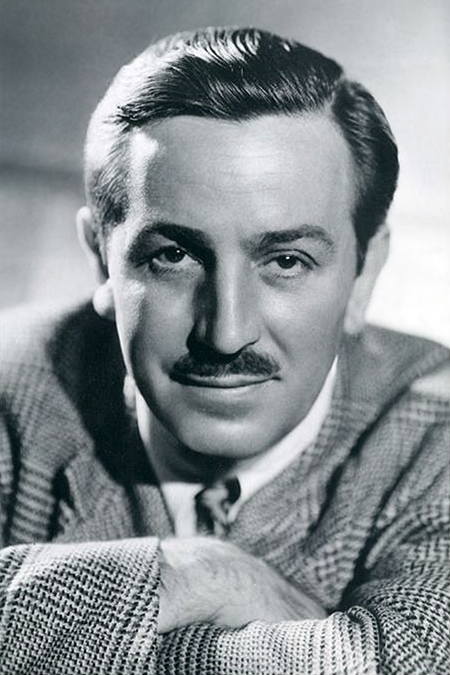

Famous DeMolays
| Walt Disney | Bill Clinton | Neil Armstrong |
|---|---|---|
|  |  |
|
|
Walt Disney (1901–1966) was an American entrepreneur, animator, and filmmaker who revolutionized the entertainment industry. He co-founded The Walt Disney Company, which became a global leader in animated films, theme parks, and family entertainment. Known for his creativity and innovation, Disney introduced iconic characters like Mickey Mouse and produced beloved classics such as Snow White and the Seven Dwarfs, the first full-length animated feature film. He also pioneered the concept of theme parks with Disneyland, creating immersive experiences for visitors of all ages. Disney's legacy continues to influence the entertainment world through his company's ongoing success. |
Bill Clinton, the 42nd President of the United States, served from 1993 to 2001. A member of the Democratic Party, he was the first president from the Baby Boomer generation. Clinton's administration was marked by strong economic growth, including a balanced federal budget and budget surpluses. Domestically, he signed significant legislation such as the Family and Medical Leave Act and welfare reform while promoting policies aimed at expanding global trade, including NAFTA. Clinton also played a prominent role in international diplomacy, including efforts to broker peace in the Middle East and in Northern Ireland. Before his presidency, he served as the Governor of Arkansas, where he focused on education reform and economic development |
Neil Armstrong (1930–2012) was an American astronaut, aerospace engineer, and test pilot best known as the first human to set foot on the Moon. On July 20, 1969, he commanded NASA's Apollo 11 mission, delivering his iconic phrase, "That's one small step for [a] man, one giant leap for mankind." Armstrong's achievement marked a historic milestone in space exploration. Before joining NASA, he served as a naval aviator during the Korean War and later became a test pilot, flying experimental aircraft like the X-15. Following his astronaut career, Armstrong worked as a professor of aerospace engineering and remained a strong advocate for science and space exploration. |
| Mel Blanc | Josh Steinbeck |
|---|---|

|
|
|
Mel Blanc (1908–1989) was a legendary American voice actor, comedian, and radio personality, widely celebrated as "The Man of a Thousand Voices." He is best known for voicing many iconic Warner Bros. cartoon characters, including Bugs Bunny, Daffy Duck, Porky Pig, Tweety Bird, and Yosemite Sam, among others. Blanc's versatility and talent revolutionized the art of voice acting, making his characters enduring symbols of animation. Beyond Warner Bros., he voiced Barney Rubble in The Flintstones and Mr. Spacely in The Jetsons. His groundbreaking career spanned decades, and his unparalleled contribution to animation earned him recognition as one of the greatest voice actors of all time. |
John Steinbeck (1902–1968) was an American author and Nobel laureate renowned for his powerful and socially conscious novels. His works often explored themes of human struggle, social justice, and the resilience of ordinary people during challenging times. Steinbeck's most famous works include The Grapes of Wrath, which chronicles the hardships of migrant workers during the Great Depression, Of Mice and Men, a poignant tale of friendship and dreams, and East of Eden, an epic family saga. His storytelling combined vivid descriptions of rural America with deep empathy for his characters, cementing his legacy as one of the most influential writers of the 20th century. |